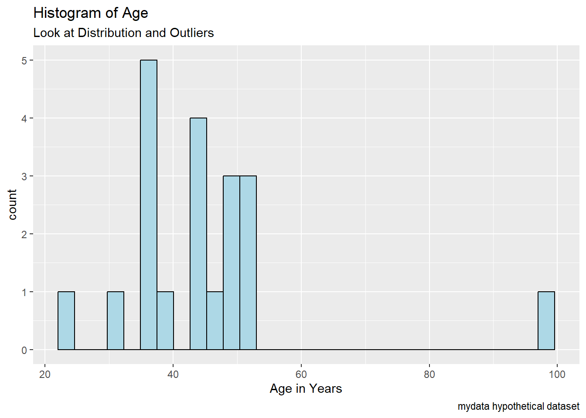
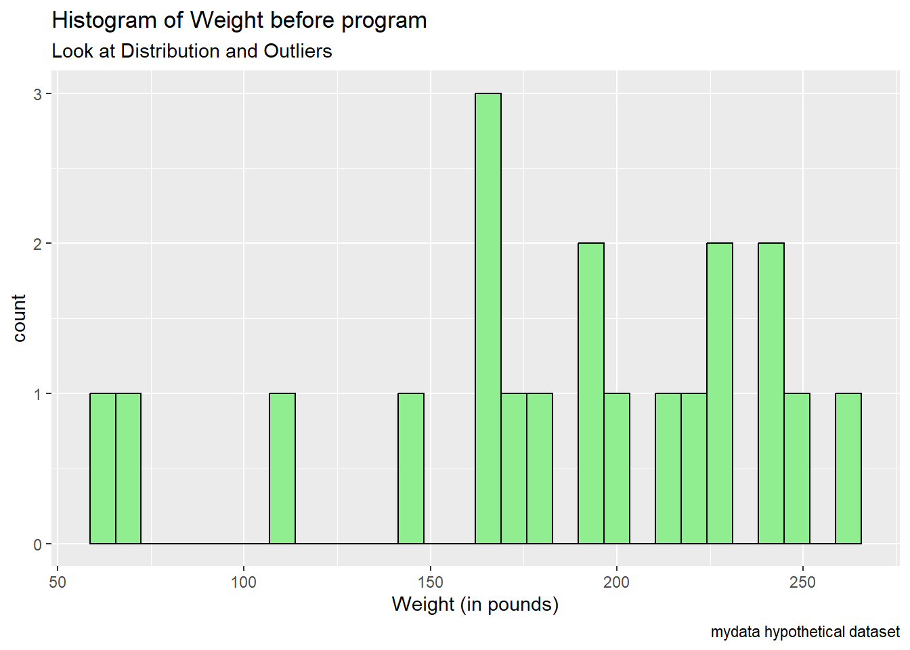
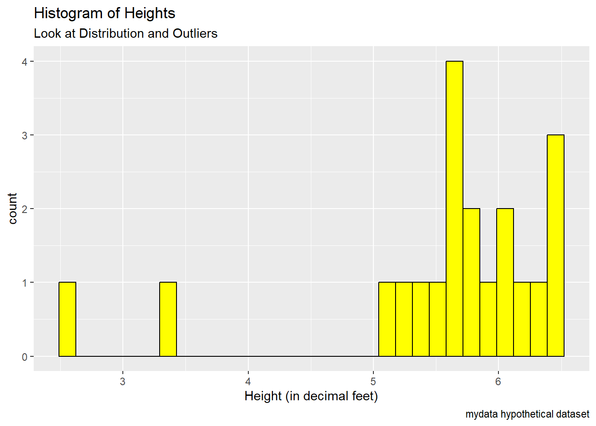
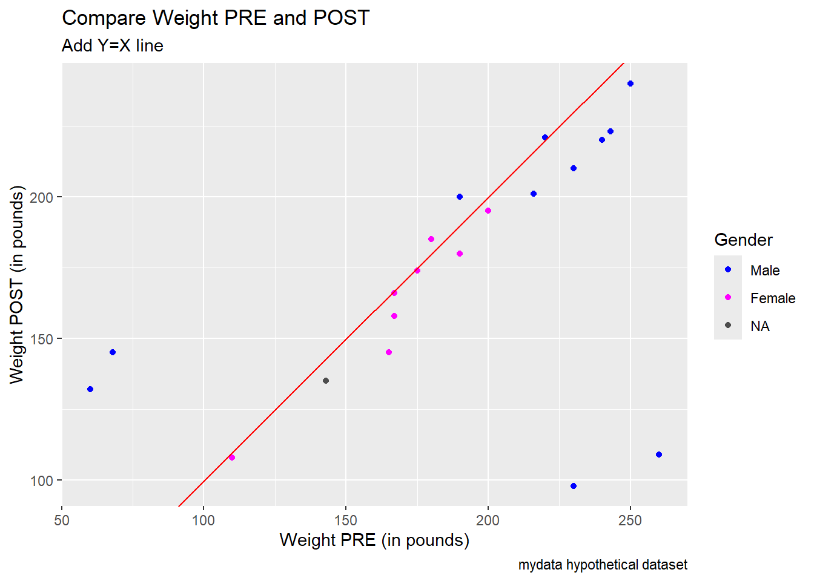
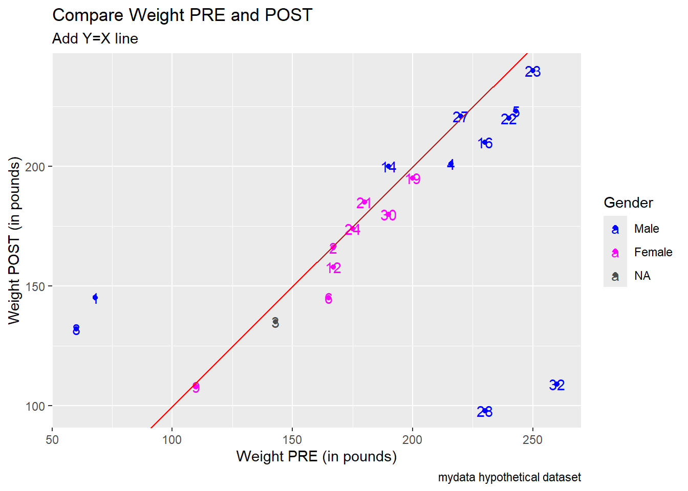
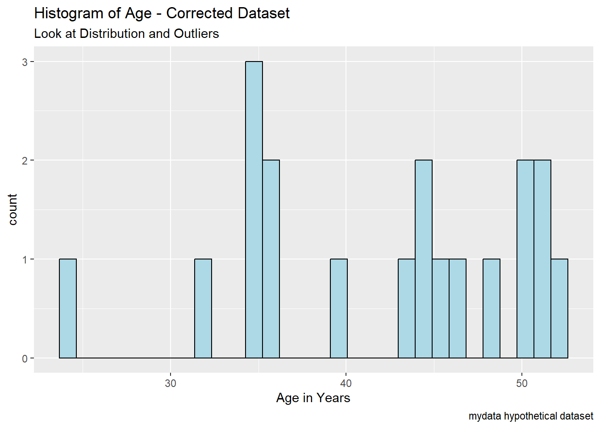
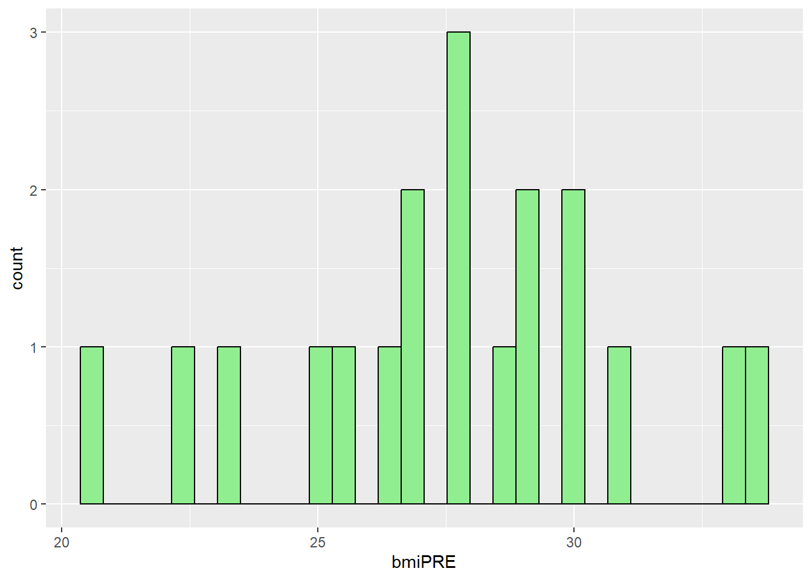

library(readr)
mydata <- read_csv("mydata.csv")mydata dataset - Data Exploration and Cleanup
Load Data
Read in the CSV file using the readr package
Take a look at the dataset
Type View(mydata) at the prompt or run interactively from an R script or Rmarkdown document.
I will also be handing out a hard copy of these data so you can look at the data, the values and any patterns that emerge.
View(mydata)Also take a look at the “codebook”
Feel free to click on links below or right click and “SaveAs” to save the file on your computer.
Open discussion on what you “see”
There are 11-12 problems with this little dataset. Which ones do you see?
How might we use code to FIND (discover) these problems?
How might we use code to FIX (correct) these problems?
List of issues
- Is Age 99 correct or not? (discussion on how to code missing, look at histogram of age distributions – does someone aged 99 seem reasonable)?
- There are 2 people with a Weight (in pounds) < 100. Are these correct? These are probably weights in kg instead of in pounds. We can spot these via histograms, but since we have weights pre and post we can compare these to make some reasonable guesses.
- There are also 2 weights post that are very different than their pre weights – this we can see in a 2D scatterplot
- There are 2 heights (in decimal feet) < 4 feet tall. One is probably a simple typo 2.6 feet should most likely be 6.2 feet. But 3.3 could be correct or incorrect. Could this possibly be a paraplegic? [I did encounter this in one study a while ago…] Should we keep or remove this data from the rest of the analyses?
- There are values of 9 for SES, and in the q1-q6 items that should be changed to missing
- GenderSTR was captured as “free text” versus GenderCoded where 1=Male, 2=Female – we can discuss the blank/missing values and how these differ for text versus numeric columns
- There is an 11 for q1 – this is probably a typo for 1
- There is a 44 for q2 – probably a typo for 4
- There is a 40 for q4 – probably a typo for 4
- There is a 99 for q5 – also set to missing
- For subjects 28, 30, 32 items q4,q5,q6 are all missing in a block – why? [I had this happen in 1 study where people were not flipping the page over to finish the 2nd page of the survey.]
- There is also this weird blank row with no subject ID where it looks like q2 and q3 are shifted down by 1 row. This leads to all of the variables having missing data when we shouldn’t have much…
Code to find issues
Data Summaries - descriptive statistics
Use summary statistics to:
- look at min and max
- are these in the correct range?
- look at mean and median
- are they similar?
- what does it indicate if the mean and median are not similar
- are there any missing values (NA’s)?
- should there be missing data?
- how is the missing data coded or indicated in the dataset?
summary(mydata) SubjectID Age WeightPRE WeightPOST
Min. : 1.00 Min. :24.00 Min. : 60.0 Min. : 98.0
1st Qu.: 5.75 1st Qu.:35.75 1st Qu.:166.5 1st Qu.:142.5
Median :15.00 Median :44.00 Median :190.0 Median :177.0
Mean :15.30 Mean :44.80 Mean :185.2 Mean :172.2
3rd Qu.:23.25 3rd Qu.:50.00 3rd Qu.:230.0 3rd Qu.:203.2
Max. :32.00 Max. :99.00 Max. :260.0 Max. :240.0
NA's :1 NA's :1 NA's :1 NA's :1
Height SES GenderSTR GenderCoded
Min. :2.600 Min. :1.0 Length:21 Min. :1.000
1st Qu.:5.475 1st Qu.:2.0 Class :character 1st Qu.:1.000
Median :5.750 Median :2.0 Mode :character Median :1.000
Mean :5.550 Mean :2.3 Mean :1.421
3rd Qu.:6.125 3rd Qu.:2.0 3rd Qu.:2.000
Max. :6.500 Max. :9.0 Max. :2.000
NA's :1 NA's :1 NA's :2
q1 q2 q3 q4
Min. : 1.00 Min. : 1.000 Min. :1.00 Min. : 1.000
1st Qu.: 1.75 1st Qu.: 2.000 1st Qu.:1.00 1st Qu.: 2.000
Median : 3.00 Median : 4.000 Median :3.00 Median : 3.000
Mean : 3.35 Mean : 5.526 Mean :3.15 Mean : 5.062
3rd Qu.: 4.25 3rd Qu.: 4.500 3rd Qu.:4.25 3rd Qu.: 4.000
Max. :11.00 Max. :44.000 Max. :9.00 Max. :40.000
NA's :1 NA's :2 NA's :1 NA's :5
q5 q6
Min. : 1.000 Min. :1.000
1st Qu.: 2.000 1st Qu.:2.000
Median : 4.000 Median :4.000
Mean : 9.176 Mean :3.706
3rd Qu.: 5.000 3rd Qu.:5.000
Max. :99.000 Max. :9.000
NA's :4 NA's :4 Load the dplyr package to use %>% and select() and the psych package to use psych::describe() functions.
In the code below, I am selecting only the numeric columns using the where(is.numeric) code inside the select().
I also added another select() to remove (or drop) the SubjectID column which is numeric, but we do not need to compute the statistics for the ID numbers. To drop this column I put the exclamation point ! in front which means to NOT select this column. You could also write it putting a minus - sign in front instead of the ! by using select(-SubjectID).
library(dplyr)
library(psych)
mydata %>%
select(where(is.numeric)) %>%
select(!SubjectID) %>%
psych::describe()| vars | n | mean | sd | median | trimmed | mad | min | max | range | skew | kurtosis | se | |
|---|---|---|---|---|---|---|---|---|---|---|---|---|---|
| Age | 1 | 20 | 44.800000 | 14.8664228 | 44.00 | 43.062500 | 10.37820 | 24.0 | 99.0 | 75.0 | 2.2063564 | 6.1012897 | 3.3242332 |
| WeightPRE | 2 | 20 | 185.200000 | 56.4871667 | 190.00 | 191.625000 | 51.89100 | 60.0 | 260.0 | 200.0 | -0.7743422 | -0.3013193 | 12.6309145 |
| WeightPOST | 3 | 20 | 172.250000 | 42.2796143 | 177.00 | 173.500000 | 48.18450 | 98.0 | 240.0 | 142.0 | -0.2040592 | -1.2586077 | 9.4540092 |
| Height | 4 | 20 | 5.550000 | 0.9795273 | 5.75 | 5.762500 | 0.51891 | 2.6 | 6.5 | 3.9 | -1.8132522 | 2.6446547 | 0.2190290 |
| SES | 5 | 20 | 2.300000 | 1.6889735 | 2.00 | 2.000000 | 0.00000 | 1.0 | 9.0 | 8.0 | 3.0373478 | 9.4568496 | 0.3776660 |
| GenderCoded | 6 | 19 | 1.421053 | 0.5072573 | 1.00 | 1.411765 | 0.00000 | 1.0 | 2.0 | 1.0 | 0.2948888 | -2.0107026 | 0.1163728 |
| q1 | 7 | 20 | 3.350000 | 2.3457689 | 3.00 | 3.062500 | 2.22390 | 1.0 | 11.0 | 10.0 | 1.5276108 | 2.9740250 | 0.5245299 |
| q2 | 8 | 19 | 5.526316 | 9.5240539 | 4.00 | 3.529412 | 1.48260 | 1.0 | 44.0 | 43.0 | 3.4391747 | 11.0307874 | 2.1849678 |
| q3 | 9 | 20 | 3.150000 | 2.0844032 | 3.00 | 2.937500 | 2.96520 | 1.0 | 9.0 | 8.0 | 0.9042716 | 0.5852980 | 0.4660867 |
| q4 | 10 | 16 | 5.062500 | 9.3983598 | 3.00 | 2.857143 | 1.48260 | 1.0 | 40.0 | 39.0 | 3.1845605 | 8.9452972 | 2.3495899 |
| q5 | 11 | 17 | 9.176471 | 23.2385329 | 4.00 | 3.733333 | 1.48260 | 1.0 | 99.0 | 98.0 | 3.3788412 | 10.1359154 | 5.6361721 |
| q6 | 12 | 17 | 3.705882 | 1.9288826 | 4.00 | 3.533333 | 1.48260 | 1.0 | 9.0 | 8.0 | 0.9340719 | 0.8076514 | 0.4678228 |
So as you can see in the tables above:
- every variable has missing data - should they?
- notice the max values of 9 and 99
- notice that for the q1-q6 items the values should range between 1-5, but there are some values of 11, 40, and 44
- notice that for Weight PRE there are values < 100? does this seem correct?
- notice that q4, q5, q6 have the most missing data (4 NA’s)
Visualization - Make histograms - look at distributions
Let’s use the ggplot2 package to make some histograms of
AgeWeightPREandHeight
Notice the possible outlier for age > 90.
library(ggplot2)
ggplot(mydata,
aes(x = Age)) +
geom_histogram(fill = "lightblue",
color = "black") +
labs(title = "Histogram of Age",
subtitle = "Look at Distribution and Outliers",
caption = "mydata hypothetical dataset") +
xlab("Age in Years")
Notice the odds values for weights < 100 lbs (pounds).
ggplot(mydata,
aes(x = WeightPRE)) +
geom_histogram(fill = "lightgreen",
color = "black") +
labs(title = "Histogram of Weight before program",
subtitle = "Look at Distribution and Outliers",
caption = "mydata hypothetical dataset") +
xlab("Weight (in pounds)")
Notice the really low heights < 4 feet?
ggplot(mydata,
aes(x = Height)) +
geom_histogram(fill = "yellow",
color = "black") +
labs(title = "Histogram of Heights",
subtitle = "Look at Distribution and Outliers",
caption = "mydata hypothetical dataset") +
xlab("Height (in decimal feet)")
Data Wrangling
Let’s use the dplyr package and the arrange() function to find the IDs with problematic data.
Find the IDs with the oldest ages - use desc() to sort descending. ID #21 is age 99 and then next oldest person is ID # 22 who is age 52.
Is age 99 a real age or missing? What do you think given the rest of the ages in the dataset?
mydata %>% # start with mydata
arrange(desc(Age)) %>% # sort descending by Age
select(SubjectID, Age) %>% # select IDs and Age
head() # show the top 6 rows# A tibble: 6 × 2
SubjectID Age
<dbl> <dbl>
1 21 99
2 22 52
3 9 51
4 27 51
5 2 50
6 8 50Get the IDs for the people with the shortest heights. ID #28 is only 2.6 feet tall and ID #8 is 3.3 feet tall. Do these seem reasonable. What do you think happened?
mydata %>% # start with mydata
arrange(Height) %>% # sort ascending by Height
select(SubjectID, Height) %>% # select IDs and Height
head() # show the bottom 6 rows# A tibble: 6 × 2
SubjectID Height
<dbl> <dbl>
1 28 2.6
2 8 3.3
3 9 5.1
4 6 5.2
5 2 5.4
6 12 5.5Look at the small weights at PRE. IDs #8 and #1 have weights of only 60 and 68 pounds? Could this be the wrong units - maybe these are weights in kilograms (kg*2.205 = lbs)?
- 60 kilograms = 132.3 pounds
- 68 kilograms = 149.9 pounds
These weights in pounds seem more reasonable.
mydata %>%
arrange(WeightPRE) %>%
select(SubjectID, WeightPRE) %>%
head() # A tibble: 6 × 2
SubjectID WeightPRE
<dbl> <dbl>
1 8 60
2 1 68
3 9 110
4 3 143
5 6 165
6 2 167Let’s also see if we can spot the IDs for the weights at PRE and at POST that are very different. Let’s compute the difference scores and look at the sorted differences by absolute value (using the abs() function).
mydata <- mydata %>%
mutate(diffWeight = WeightPRE - WeightPOST,
abs_diffWeight = abs(diffWeight))Sort by the largest differences (+ or -). Show the top 10 rows.
Notice ID 32 has a PRE weight of 260 lbs but a post weight of 109 lbs - maybe the 109 should be 209?
ID 28 also has an unusually large difference, 230 lbs at PRE but only 98 lbs at POST - maybe this should be 198 lbs?
mydata %>%
arrange(desc(abs_diffWeight)) %>%
select(SubjectID,
abs_diffWeight,
WeightPRE,
WeightPOST) %>%
head(n=10)# A tibble: 10 × 4
SubjectID abs_diffWeight WeightPRE WeightPOST
<dbl> <dbl> <dbl> <dbl>
1 32 151 260 109
2 28 132 230 98
3 1 77 68 145
4 8 72 60 132
5 5 20 243 223
6 6 20 165 145
7 16 20 230 210
8 22 20 240 220
9 4 15 216 201
10 14 10 190 200Make Scatterplots - look at 2 or more variables at once
Plot of Weight PRE and Weight POST along with Gender.
Before the plot, let’s create a new “factor-type” variable for Gender, so we can use gender as a discrete categorical variable to assign colors.
mydata <- mydata %>%
mutate(
GenderCoded.f = factor(
GenderCoded,
levels = c(1, 2),
labels = c("Male",
"Female")))Notice the 2 really small Weight PRE values and the 2 high Weight PRE values that also have really low Weight POST values. Also notice that all 4 of these outliers are “males”.
Add a 45 degree diagonal line Y = X to help see if people weighed more or less at POST compared to PRE. Most of the points have PRE values > POST indicating most people lost weight. But we need to figure out/correct these outliers first.
Use scale_color_manual() to add custom colors and then use color = "" to add a custom label for the color legend for the gender categories.
ggplot(mydata,
aes(x = WeightPRE,
y = WeightPOST,
color = GenderCoded.f)) +
geom_point() +
geom_abline(intecept = 0,
slope = 1,
color = "red") +
scale_color_manual(values = c("blue",
"magenta"),
na.value = "grey30") +
xlab("Weight PRE (in pounds)") +
ylab("Weight POST (in pounds)") +
labs(
title = "Compare Weight PRE and POST",
subtitle = "Add Y=X line",
caption = "mydata hypothetical dataset",
color = "Gender"
)
Another option since we don’t have too much data - we can add text labels for each data point using the Subject IDs.
ggplot(mydata,
aes(x = WeightPRE,
y = WeightPOST,
color = GenderCoded.f)) +
geom_point() +
geom_text(aes(label = SubjectID)) +
geom_abline(intecept = 0,
slope = 1,
color = "red") +
scale_color_manual(values = c("blue",
"magenta"),
na.value = "grey30") +
xlab("Weight PRE (in pounds)") +
ylab("Weight POST (in pounds)") +
labs(
title = "Compare Weight PRE and POST",
subtitle = "Add Y=X line",
caption = "mydata hypothetical dataset",
color = "Gender"
)
Code to fix issues
As we make corrections and updates, let create a new dataset called mydata_corrected.
Let’s make the following edits:
1. Set values of 9 and 99 to missing - using a “base R” code approach - but don’t set Subject ID #9 to missing
# make copy of original data
# remove SubjectID column first
mydata_corrected <- mydata %>%
select(-SubjectID)
# set all values of 99 to NA missing
mydata_corrected[mydata_corrected == 99] <- NA
# set all values of 9 to NA missing
mydata_corrected[mydata_corrected == 9] <- NA
# add SubjectID back to dataset
mydata_corrected$SubjectID <- mydata$SubjectIDTake a quick look at histogram of age again
ggplot(mydata_corrected,
aes(x = Age)) +
geom_histogram(fill = "lightblue",
color = "black") +
labs(title = "Histogram of Age - Corrected Dataset",
subtitle = "Look at Distribution and Outliers",
caption = "mydata hypothetical dataset") +
xlab("Age in Years")
Let’s also make these edits using mutate() function from dplyr.
2. Correct typos for q1-q6
- set value of 11 to 1
- set value of 40 and 44 to 4# create new corrected variable
mydata_corrected <- mydata_corrected %>%
mutate(q1_fix = case_when(
(q1 == 11) ~ 1,
(q1 == 40) ~ 4,
(q1 == 44) ~ 4,
.default = q1
))We can speed this up a bit by using the across() function as well, see https://www.r-bloggers.com/2023/10/a-couple-of-case_when-tricks/#google_vignette.
# this corrects all q variables at once
# but overwrites the original q items
mydata_corrected <- mydata_corrected %>%
mutate(
across(starts_with("q"),
~ case_when(
(. == 11) ~ 1,
(. == 40) ~ 4,
(. == 44) ~ 4,
.default = .)
)
)3. For WeightPRE, convert the weights < 70 from kg to pounds (kg*2.205 = lbs)
mydata_corrected <- mydata_corrected %>%
mutate(
WeightPRE_fix = case_when(
(WeightPRE < 70) ~ WeightPRE*2.205,
.default = WeightPRE
)
)4. For ID #28 change 2.6 feet to 6.2 and for ID #8 set 3.3 feet to NA_real_ to indicate missing for real numeric data.
mydata_corrected <- mydata_corrected %>%
mutate(
Height_fix = case_when(
(SubjectID == 28) ~ 6.2,
(SubjectID == 8) ~ NA_real_,
.default = Height
)
)5. For the 2 typos for WeightPOST - make these changes:
- Change ID 32’s POST weight from 109 lbs to 209 lbs
- Change ID 28’s POST weight from 98 lbs to 198 lbs
mydata_corrected <- mydata_corrected %>%
mutate(
WeightPOST_fix = case_when(
(SubjectID == 32) ~ 209,
(SubjectID == 28) ~ 198,
.default = WeightPOST
)
)6. Shift the values for q2 and q3 up by 1 row using the lead() function from dplyr. Let’s see what the lead() and lag() function do.
# see the order of values for q2
mydata$q2 [1] NA 4 4 2 3 5 NA 4 1 44 1 4 5 2 5 9 1 4 1 2 4# see shift using lag()
dplyr::lag(mydata$q2, n=1) [1] NA NA 4 4 2 3 5 NA 4 1 44 1 4 5 2 5 9 1 4 1 2# see shift using lead()
dplyr::lead(mydata$q2, n=1) [1] 4 4 2 3 5 NA 4 1 44 1 4 5 2 5 9 1 4 1 2 4 NACorrect q2 and q3.
mydata_corrected <- mydata_corrected %>%
mutate(q2_fix = lead(q2, n=1),
q3_fix = lead(q3, n=1))7. Save the correct values
mydata_final <- mydata_corrected %>%
filter(!is.na(SubjectID)) %>%
select(SubjectID,
Age,
SES,
Height_fix,
WeightPRE_fix,
WeightPOST_fix,
GenderCoded.f,
q1_fix,
q2_fix,
q3_fix,
q4,
q5,
q6)8. We could also write this data out to be read in later - save this in the raw binary format *.RData.
save(mydata_final,
file = "mydata_final.RData")We can clean up our Global Environment and then read back in this cleaned and corrected dataset.
rm(list = ls())
ls()character(0)load(file = "mydata_final.RData")9. Let’s create BMI for PRE and POST
So, let’s compute BMI (body mass index) as follows from Height (in inches) and Weight (in pounds):
\[BMI = \left(\frac{weight_{(lbs)}}{(height_{(inches)})^2}\right) * 703\]
# Compute BMI for the PRE Weight
mydata_final <- mydata_final %>%
mutate(
bmiPRE = (WeightPRE_fix * 703) / (Height_fix * 12)^2,
bmiPOST = (WeightPOST_fix * 703) / (Height_fix * 12)^2
)
# look at histograms of BMI
ggplot(mydata_final,
aes(x = bmiPRE)) +
geom_histogram(fill = "lightgreen",
color = "black")